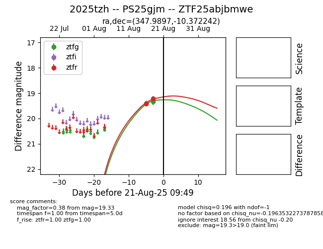

Target 2025tzh at 2025-08-26 10:53, see:
FINK: fink-portal.org/ZTF25abjbmwe
Lasair: lasair-ztf.lsst.ac.uk/objects/ZTF25abjbmwe
ALeRCE: alerce.online/object/ZTF25abjbmwe
TNS: wis-tns.org/object/2025tzh
YSE: ziggy.ucolick.org/yse/transient_detail/2025tzh
alt names
ZTF25abjbmwe (ztf,fink)
2025tzh (tns,yse)
PS25gjm (panstarrs)
coordinates:
equatorial (ra, dec) = (347.9897,-10.37229)
galactic (l, b) = (63.7417,-61.20607)
photometry
last atlaso=19.33, ps1::g=19.50, ps1::i=19.46, ps1::r=19.31, ps1::y=19.58, ztfg=19.45, ztfr=19.26
1 atlaso, 6 ps1::g, 2 ps1::i, 4 ps1::r, 2 ps1::y, 3 ztfg, 4 ztfr detections
